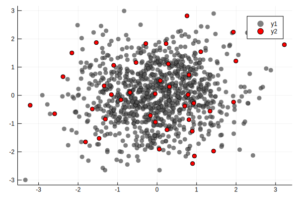
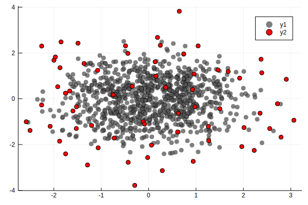
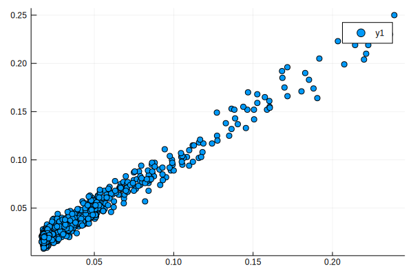

DPP.jl: a Julia package for sampling Determinantal Point Processes
DPP.jl provides some types and functions for sampling from DPPs (and related models).
Quick start
To define a DPP, first define an L-ensemble. The L-ensemble can either be defined as:
- full-rank, in which case it's represented as a $n \times n$ matrix $\mathbf{L}$
- low-rank, in which case it's represented as $\mathbf{L} = \mathbf{M}\mathbf{M}^t$ where $\mathbf{M}$ is $n \times m$, $m \leq n$. Low-rank ensembles are always faster to sample from.
- "projection", which is just like low-rank, expect you're restricted to sampling exactly $m$ points (i.e., the rank of the matrix)
An example for full-rank L-ensembles:
using DPP
X = randn(2,1000) #1,000 points in dim 2
L = DPP.gaussker(X,.5) |> FullRankEnsemble
rescale!(L,40)
ind = sample(L) |> collect #sample returns a BitSet, we collect all indices
# On this plot the original points are in grey, the sampled ones in red
using Plots
Plots.scatter(X[1,:],X[2,:],color=:gray,alpha=.5)
Plots.scatter!(X[1,ind],X[2,ind],color=:red,alpha=1)Qt: Session management error: Could not open network socket
For low-rank ensembles, we can use an RFF approximation:
Lr = rff(X,150,.5) |> LowRankEnsemble
rescale!(Lr,40)
ind = sample(Lr) |> collect
Plots.scatter(X[1,:],X[2,:],color=:gray,alpha=.5) # hide
Plots.scatter!(X[1,ind],X[2,ind],color=:red,alpha=1) # hide
savefig("test2.svg") # hide┌ Warning: Numerical rank is lower than number of matrix columns
└ @ DPP ~/Repos/DPP.jl/src/lensemble.jl:58
Qt: Session management error: Could not open network socket
Example using polynomial features and a projection ensemble:
Lp = polyfeatures(X,10) |> ProjectionEnsemble
ind = sample(Lp) |> collect
Plots.scatter(X[1,:],X[2,:],color=:gray,alpha=.5) # hide
Plots.scatter!(X[1,ind],X[2,ind],color=:red,alpha=1) # hide
savefig("test3.svg"); # hideQt: Session management error: Could not open network socket
Inclusion probabilities
An attractive aspect of DPPs is that inclusion probabilities are easy to compute. An inclusion probability is the probability that a certain item (or items) is included in the random set produced by a DPP.
using StatsBase
#sample 1,000 times and compute empirical inclusion frequencies
reps = [StatsBase.counts(collect(sample(Lr)),1:Lr.n) for _ in 1:1000];
#compare to theoretical values
scatter(inclusion_prob(Lr),mean(reps))
savefig("example_incl.svg"); # hideWARNING: using StatsBase.sample in module ex-1 conflicts with an existing identifier.
Qt: Session management error: Could not open network socket
So far these are just first-order inclusion probabilities. More generally, you can obtain higher-order probabilities (ie prob that items i,j,k,... are in the set jointly) from the marginal kernel of the DPP, given by "marginal_kernel"
In the next example we compute the empirical inclusion probability of a set of items:
using LinearAlgebra
X = randn(2,10)
L = DPP.gaussker(X,.5) |> FullRankEnsemble
rescale!(L,4)
set = [3,5]
incl = [ length(intersect(set,sample(L)))==length(set) for _ in 1:10000];
#empirical inclusion prob.
emp = mean(incl)0.1352The theoretical value is given by
th = det(marginal_kernel(L)[set,set])0.13671749599737715k-DPPs
Generally, a DPP will generate a subset of random size (except for projection DPPs). If you'd like to sample a subset of fixed size, use a k-DPP. Specifying a size argument in the "sample" function will do the trick:
sample(Lr,20) |> length20Be careful, k-DPPs do not have a marginal kernel. Although the inclusion probabilities are nominally intractable, there exist good approximations that can be computed quickly. Use inclusion_prob and specify k to get approximate first-order inclusion probabilities.
Functions and types
DPP.gaussker — Method.gaussker(X,σ)Compute the Gaussian kernel matrix for X and parameter σ, ie. a matrix with entry i,j equal to $\exp(-\frac{(x_i-x_j)^2}{2σ^2})$
See also: rff, kernelmatrix
DPP.inclusion_prob — Method.inclusion_prob(L::AbstractLEnsemble,k)First-order inclusion probabilities in a k-DPP with L-ensemble L. Uses a (typically very accurate) saddlepoint approximation from Barthelmé, Amblard, Tremblay (2019).
DPP.inclusion_prob — Method.inclusion_prob(L::AbstractLEnsemble)
Compute first-order inclusion probabilities, i.e. the probability that each item in 1..n is included in the DPP.
See also: marginal_kernel
DPP.marginal_kernel — Method. marginal_kernel(L::AbstractLEnsemble)Compute and return the marginal kernel of a DPP, K. The marginal kernel of a DPP is a (n x n) matrix which can be used to find the inclusion probabilities. For any fixed set of indices ind, the probability that ind is included in a sample from the DPP equals det(K[ind,ind]).
DPP.polyfeatures — Method.polyfeatures(X,order)Compute monomial features up to a certain degree. For instance, if X is a 2 x n matrix and the degree argument equals 2, it will return a matrix with columns 1,X[1,:],X[2,:],X[1,:].^2,X[2,:].^2,X[1,:]*X[2,:] Note that the number of monomials of degree r in dimension d equals ${ d+r \choose r}$
X is assumed to be of dimension $d \times n$ where d is the dimension and n is the number of points.
Examples
X = randn(2,10) #10 points in dim 2
polyfeatures(X,2) #Output has three columnsDPP.rescale! — Function.rescale!(L,k)
$\DeclareMathOperator{\Tr}{Tr}$
Rescale the L-ensemble such that the expected number of samples equals k. The expected number of samples of a DPP equals $\Tr \mathbf{L}\left( \mathbf{L} + \mathbf{I} \right)$. The function rescales $\mathbf{L}$ to $\alpha \mathbf{L}$ such that $\Tr \alpha \mathbf{L}\left( \alpha \mathbf{L} + \mathbf{I} \right) = k$
DPP.rff — Method.rff(X,m,σ)Compute Random Fourier Features for the Gaussian kernel matrix with input points X and parameter σ. Returns a random matrix M such that, in expectation $\mathbf{MM}^t = \mathbf{K}$, the Gaussian kernel matrix. M has 2*m columns. The higher m, the better the approximation.
Examples
X = randn(2,10) #10 points in dim 2
rff(X,4,1.0)See also: gaussker, kernelmatrix
DPP.sample — Method.sample(L::AbstractLEnsemble,k)Sample a k-DPP, i.e. a DPP with fixed size. k needs to be strictly smaller than the rank of L (if it equals the rank of L, use a ProjectionEnsemble).
The algorithm uses a saddle-point approximation adapted from Barthelmé, Amblard, Tremblay (2019).
DPP.sample — Method. sample(L::AbstractEnsemble)Sample from a DPP with L-ensemble L. The return type is a BitSet (indicating which indices are sampled), use collect to get a vector of indices instead.
DPP.FullRankEnsemble — Type.FullRankEnsemble{T}
This type represents an L-ensemble where the matrix L is full rank. This is the most general representation of an L-ensemble, but also the least efficient, both in terms of memory and computation.
At construction, an eigenvalue decomposition of L will be performed, at O(n^3) cost.
The type parameter corresponds to the type of the entries in the matrix given as input (most likely, double precision floats).
DPP.FullRankEnsemble — Method.FullRankEnsemble(V::Matrix{T})
Construct a full-rank ensemble from a matrix. Here the matrix must be square.
DPP.FullRankEnsemble — Method.FullRankEnsemble(X::Matrix{T},k :: Kernel)
Construct a full-rank ensemble from a set of points and a kernel function.
X (the set of points) is assumed to have dimension d x n, where d is the dimension and n is the number of points. k is a kernel (see doc for package MLKernels)
Example: points in 2d along the circle, and an exponential kernel
t = LinRange(-pi,pi,10)'
X = vcat(cos.(t),sin.(t))
using MLKernels
L=FullRankEnsemble(X,ExponentialKernel(.1))DPP.LowRankEnsemble — Type.This type represents an L-ensemble where the matrix L is low rank. This enables faster computation.
The type parameter corresponds to the type of the entries in the matrix given as input (most likely, double precision floats)
DPP.LowRankEnsemble — Method.LowRankEnsemble(V::Matrix{T})
Construct a low-rank ensemble from a matrix of features. Here we assume $\mathbf{L} = \mathbf{V}\mathbf{V}^t$, so that V must be n \times r, where n is the number of items and r is the rank of the L-ensemble.
You will not be able to sample a number of items greater than the rank. At construction, an eigenvalue decomposition of V'*V will be perfomed, with cost nr^2.
DPP.ProjectionEnsemble — Method.ProjectionEnsemble(V::Matrix{T},orth=true)
Construct a projection ensemble from a matrix of features. Here we assume $\mathbf{L} = \mathbf{V}\mathbf{V}^t$, so that V must be n \times r, where n is the number of items and r is the rank. V needs not be orthogonal. If orth is set to true (default), then a QR decomposition is performed. If V is orthogonal already, then this computation may be skipped, and you can set orth to false.